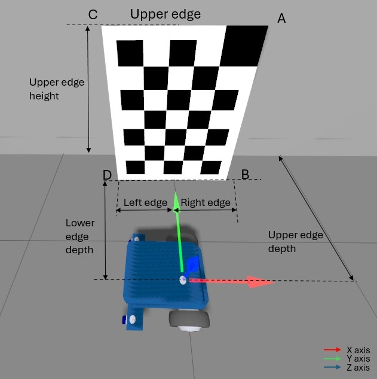

Static camera calibration routine
The goal of the Static Camera Calibration (SCC) process is to automatically determine the position and orientation of a camera relative to the Robot Coordinate System (RCS) origin. To do this, a checkerboard calibration pattern is placed in front of the camera. The coordinates of the checkerboard corners are measured with respect to the RCS, and based on these, the algorithm calculates the camera’s three rotation values, and optionally, its three translation values.
During this routine, both the camera and the checkerboard must remain static.
Shopping list
First, you will need to print the checkerboard target. You can find all the instructions related to the checkerboard on this page.
Concept
For this calibration routine, a checkerboard has to be positioned in front of each camera that should be calibrated covering at least 25% of the field of view.
The position of the checkerboard must be precisely known relative to the RCS.
Specifically, the translation coordinates (X, Y, Z) of the four corners (A, B, C, and D) must be accurately measured and provided in the RCS.
Example measurements for points A and D:
Note
The RCS is assumed to be a right-handed coordinate system.
Consider the example below of an AGV with four cameras, one on each side. In this example, four checkerboards are used.
Top view:
Side view:
In the example below, a fork truck is equipped with two cameras facing forward. In this case, two checkerboards should be used, one for each camera.
Note
In the case where two cameras have a sufficiently overlapping field of view, it can be possible to use the same checkerboard in the same position for both. Just ensure that the checkerboard position requirements are followed for both cameras.
SCC Calibration Output
The output of the SCC calibration routine includes:
Rotation of the camera in the RCS: rotX, rotY, rotZ
Translation of the camera in the RCS: transX, transY, transZ (if not provided)
Note
It is recommended to provide known translation values (e.g., from CAD drawings) to improve the robustness of the computed rotation values, if the translation values are precisly known.
Requirements
Below are the requirements for performing the SCC routine correctly.
Scene requirements
Place the checkerboard to fill as much of the field of view as possible (minimum 25%) and the full board must be visible.
The checkerboard must be positioned between 0.5 m and 3.5 m from the camera.
Mount it securely—either on a wall or on a rig fixed to the robot.
Ensure the vehicle is precisely positioned relative to the checkerboard.
It’s best if the checkerboard is perpendicular to one axis of the RCS.
If there are reflections in the image:
Try tilting the checkerboard.
Make sure all black squares are visible.
Good positioning |
Bad positioning |
|---|---|
|
|


Alternatively, if there is sufficent infrared ambient light available then change to the ambient illumination mode (
"/configuration/port/mode").
Additional requirements for the ifmVisionAssitant Wizard
The ifmVisionAssistant Wizard reduces the number of required measurements but introduces stricter setup conditions:
The large black square must be at the top-left (horizontal setup) or top-right (vertical setup).
The checkerboard must be perpendicular to either the X-axis or Y-axis of the RCS.
Allowed rotation:
If perpendicular to X-axis → only rotation around RCS Y-axis is allowed
If perpendicular to Y-axis → only rotation around RCS X-axis is allowed
Benefit: When following these conditions, only 6 measurements are needed.
Example - front centered camera
For a camera mounted to the center of the front of the robot, the measurements would be the following:
All measurements are in meters from the Robot Coordinate System’s origin to the edges of the checkerboard parallel to the Robot Coordinate System axes.
Example - side camera
For a camera mounted vertically to the side of the robot, in the +Y direction, the measurements would be the following:

Tolerances
When calibrating a camera for use with ODS, it is required that the rotation tolerances do not exceed 1°.
To achieve this, ensure the following:
For the narrow opening angle camera, O3R222, the checkerboard should be positioned at around 0.8 meters from the camera. The measurement error for each corner should not exceed 5 mm.
For the wide opening angle camera, O3R225, the checkerboard should be positioned at around 0.5 meters from the camera. The measurement error for each corner should not exceed 3 mm.
For checkerboards of different dimensions or positioned further or closer to the camera, the maximum measurement error can be scaled up or down from the values above. For example, for an O3R222 camera and for a checkerboard of half the default size, positioned at 40 cm from the camera, each measurement error must not exceed 2.5 mm,
The checkerboard should not be placed closer than 50 cm from the camera.
Ensure that the provided translation values of the camera are accurate at 5 mm,
Ensure that the position of the vehicle is accurate to 0.5°.
Run the calibration
You can either run the calibration using the wizard in the Vision Assistant, or using the embedded application and the Python or C++ API.
With the wizard
We recommend to use this option when testing this calibration routine for the first time. It provides useful visual clues and instructions.
The wizard can be used by going to the Applications window and then press on the + button and then select Wizard: Static camera calibration.
The instructions in the wizard will guide you through the entire calibration process.
With ifm3d
Using the ifm3d API can be more efficient when calibrating robots in a production end-of-line context.
Once all the measurements are known, a script can be used to automate the calibration process.
All the cameras can be simultaneously calibrated using different SCC application instances, or sequentially one after the other using the same application instance by changing the port under the ports parameter.
For example scripts, refer to the python based example below.